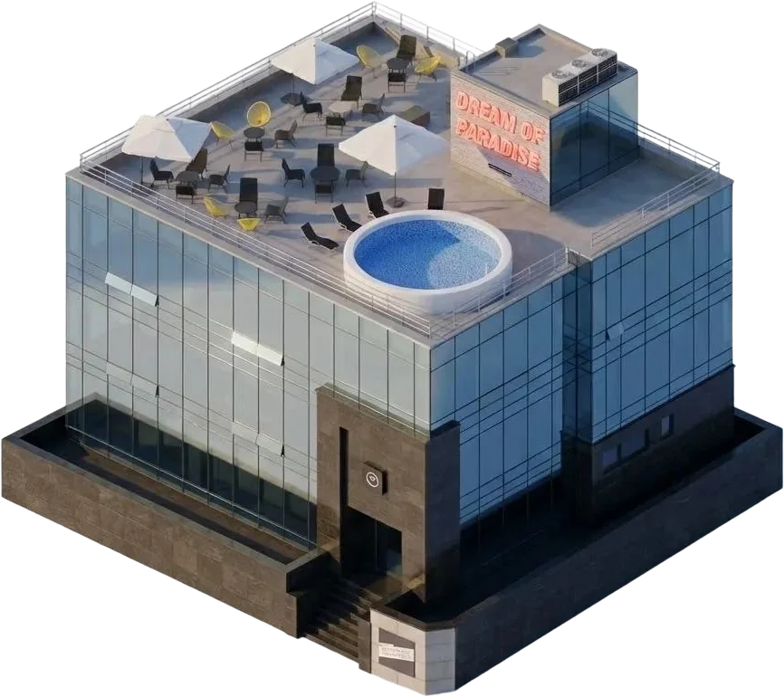
Nonce Genesis
- NAME
- 논스 제네시스 (논스 1호점)
- TYPE
- CO-WORKING & CO-LIVING
- PHILOSOPHY
- 미래 혁명가를 위한 베이스캠프
진화적 분산 조직 커뮤니티 - TECHNOLOGY
- 작업 증명 기반 큐레이션 제도, 자발적 커뮤니티 기여 문화작업 증명 기반 큐레이션 제도
자발적 커뮤니티 기여 문화 - YEAR
- 2018 ~ 2025
- PEOPLE
- 419
Introduction
논스 커뮤니티의 제네시스 블록
논스 제네시스는 블록체인 기술의 탈중앙화 정신을 바탕으로 만들어진 논스의 첫 번째 커뮤니티 하우스입니다. 비트코인의 탄생을 알린 첫 번째 블록을 칭하는 용어, 제네시스 블록 Genesis Block에서 영감을 받아 이름이 지어졌습니다.
사람들이 중앙화의 노예 혹은 대기업의 부품으로서 착취당하지 않고, 모두가 자신만의 꿈을 향해 도전하며 서로에게 용기를 전염시킬 수 있는 환경의 베이스캠프를 만들자는 목적으로 커뮤니티 하우스를 설계했습니다. 코리빙과 코워킹 및 라운지가 결합되어 50명이 살 수 있고, 60명이 일할 수 있으며, 100명이 함께 교류할 수 있는 논스만의 독자적인 구조로 공간을 디자인하였습니다.
블록체인 기술로 중앙화된 조직에서 벗어나 잃어버린 권리와 자유를 되찾고자 하는 블록체인 개발자를 시작으로, 창업가, 연구자, 철학자, 예술가, 변호사, 의사, 건축가 등 다양한 사람이 모였습니다. 탈중앙화 철학에 입각해 핵심가치 Self-Branding · Diversity · Open Source를 기반으로 공동 리추얼을 디자인하였으며, 자율과 책임을 기반한 거버넌스와 상호 성장이라는 인센티브를 설계하여 제네시스 운영 시스템을 구축하였습니다.
Philosophy
미래 혁명가를 위한 베이스캠프Basecamp for Future Rebels
논스 커뮤니티는 사람이 자기 자신으로 살아갈 수 있는 환경을 만들기 위해 존재합니다. 사회에 의해 규정된 길이 아닌 자신만의 세계관을 창조하고 끝까지 지켜내는 고유성을 지닌 이들을 논스 커뮤니티는 ‘미래 혁명가’로 정의하고, 이들이 자신의 고유성을 포기하지 않아도 되는 삶을 지켜낼 수 있도록 돕는 것이 논스 커뮤니티의 존재 이유입니다.
진화적 분산 조직 커뮤니티Evolutionary Decentralized Community
논스 커뮤니티는 블록체인 생태계에서 시작한 만큼, 블록체인의 철학과 정신에 영향을 받아 탈중앙화 및 오픈소스의 가치를 실체 있는 커뮤니티로 구현하고자 하는 미션을 갖고 있습니다. 커뮤니티의 지속 가능성을 위해 조직 구조를 연구하며, 가장 성공적인 모델로 평가되는 오픈소스 커뮤니티의 한계인 온라인을 뛰어넘어 오프라인으로서 존재하는 오픈소스 커뮤니티를 지향합니다.
Technology
작업 증명 (PoW) 기반 인원 큐레이션 시스템
블록체인에서 새로운 블록이 체인에 연결되려면 작업 증명(Proof of Work)이라고 칭하는 과정이 필요합니다. 임의의 블록이 아무렇게나 붙을 수 없으며, 논스 값을 찾아내고, 검증을 통과해야만 비로소 체인의 일부가 됩니다.
논스파운데이션은 이 핵심적인 원리를 인원 큐레이션에 차용합니다. 새로운 멤버는 기존 논스 커뮤니티 멤버의 추천을 통해서만 지원할 수 있습니다. 블록이 이전 블록의 해시를 참조하듯, 모든 연결에는 신뢰의 연결고리가 존재합니다. 이에 맞추어 우리는 세 가지 인재상 - 진정성, 도전, 정 - 을 인터뷰를 통해 검증합니다. 블록체인이 작업증명을 통해 신뢰를 만들어내듯, 논스 파운데이션은 까다로운 큐레이션을 통해 커뮤니티의 밀도를 지킵니다.
자발적 커뮤니티 기여 문화
오픈소스 커뮤니티가 가장 성공적인 커뮤니티로 평가받는 이유는 명확합니다. 자발적 기여를 이끌어내는 구조와 그에 상응하는 인센티브가 작동하기 때문입니다. 논스도 같은 원리로 움직입니다.
논스 커뮤니티는 다 같이 먹을 음식부터 쓰지 않는 물건, 내가 가진 지식 등을 공유 Air-drop 하고, 또 누군가 문제를 겪고 있으면 언제든지 손을 내밀고 돕는 문화가 설계되어 있습니다. 이러한 디테일은 사실 거창한 기여들이 아닙니다. 일상에서 자연스럽게 마음만 먹으면 일어날 수 있는 작은 것들입니다.
여기서 이러한 행위들이 쌓이면 신뢰가 됩니다. 사람 대 사람으로서의 신뢰 자본. 이 자본이 두터워질수록 커뮤니티 안에서 얻을 수 있는 것도 커집니다. 마음이 맞는 사람과 공동 창업을 하게 되기도 하고, 팀원을 채용하기도 하고, 도움이 필요할 때 요청하는 일도 훨씬 쉬워집니다. 논스에서 기여는 손해가 아닌 확실한 투자임을 인식시켜 구성원이 커뮤니티에 자발적으로 기여할 수 있는 문화를 디자인하였습니다.
Results
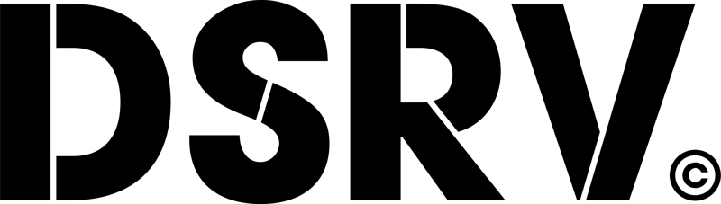
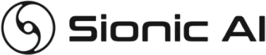
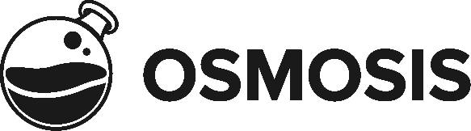
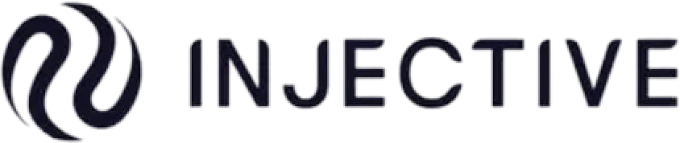
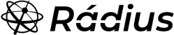
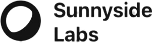
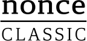
See More
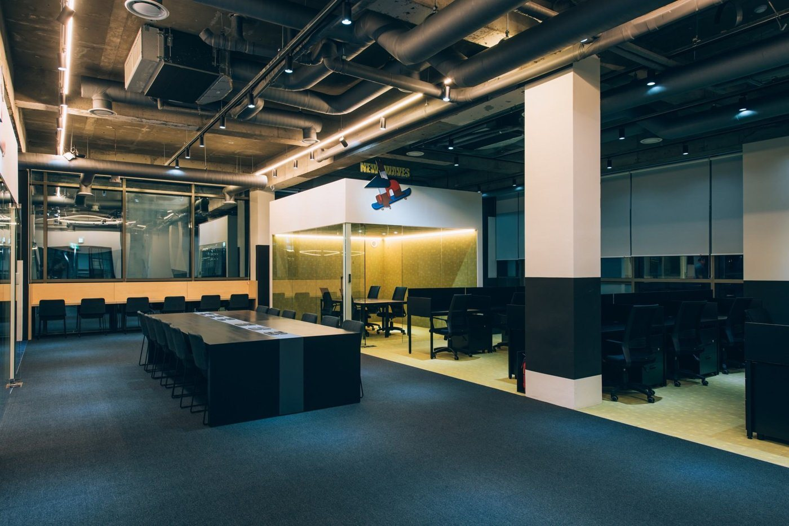
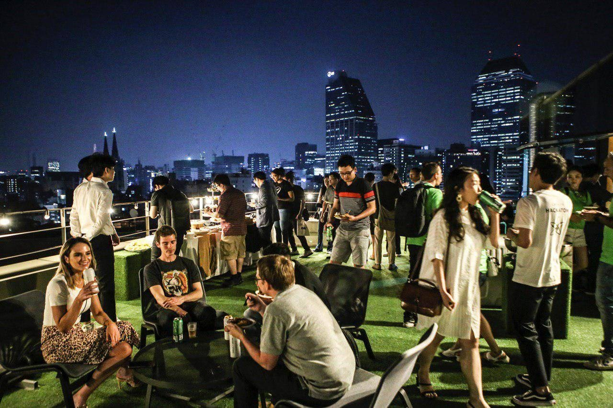
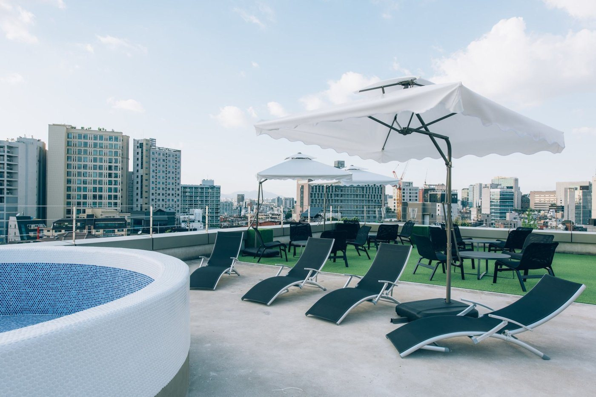
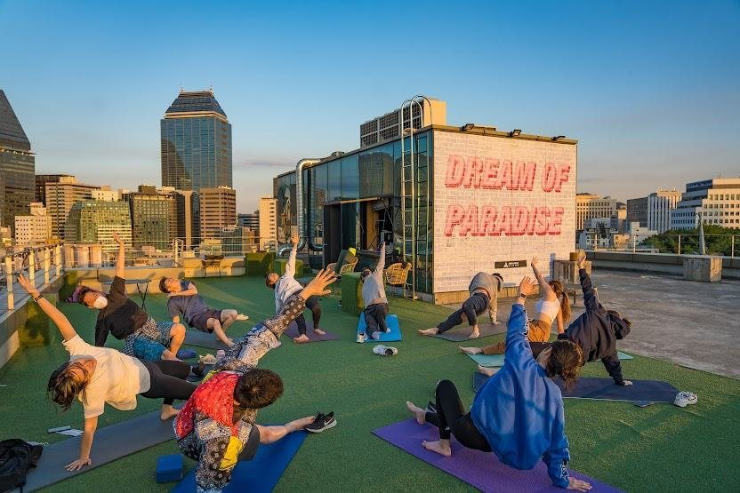